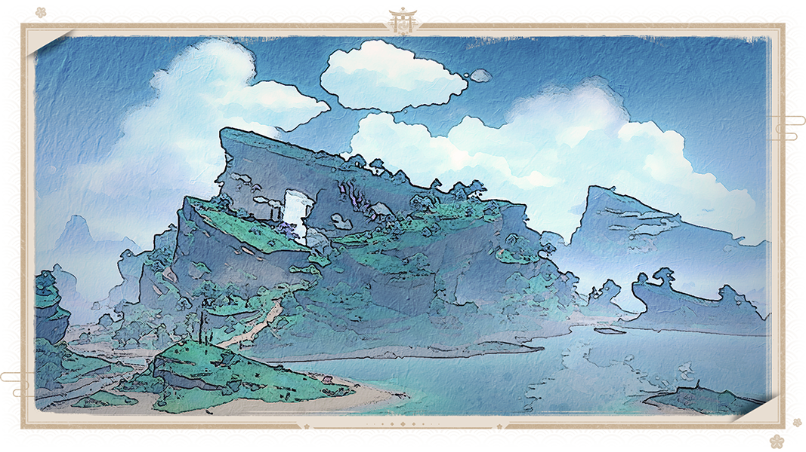

Catatan seorang Pelayar
Perjalanan ke arah Selatan
Sebagai seorang pelaut, menjelajahi semua wilayah Teyvat adalah mimpiku sejak lama. Aku belum lama bergabung dengan armada kapal sewaktu aku menulis catatan ini. Aku sedang berada dalam perjalanan menuju Inazuma di atas kapal Black Ignis. Aku sedikit malu mengakuinya, tapi ini adalah pertama kalinya aku berlayar di laut. Aku merasa kewalahan ketika menghadapi badai laut yang ganas. Chief Mate Tongsheng tidak begitu banyak bicara, tapi dia mengajariku banyak hal tentang berlayar.
Saat ini kami sedang berlayar ke arah Ritou, sebuah pulau yang merupakan bagian dari Pulau Narukami. Kota Inazuma sendiri juga terletak di Pulau Narukami. Bunga sakura tertanam di seluruh pulau ini. Di musim saat bunga sakura bermekaran, kelopak bunga terlihat bagaikan awan. Ketika berjalan melewatinya, mereka akan berjatuhan seperti hujan, menutupi seluruh tubuhmu ... Pelaut tua itu menunjukkan gambar sebuah kuil di Inazuma dengan bangga, dapat terlihat kalau ini adalah karya yang dia buat dengan sepenuh hati. Bunga sakura yang bermekaran, memang sulit untuk dilupakan.
Inazuma
Konon adat istiadat di Inazuma sangat berbeda dengan tempat-tempat lain. Tidak seperti Mondstadt dan Liyue, Inazuma berada jauh di lautan dan terdiri dari banyak pulau. Ada beberapa pulau kecil yang tersebar di sekitar pulau besar, dan orang-orang di pulau-pulau tersebut sangat bergantung pada kapal untuk saling berkomunikasi.
Ritou adalah satu-satunya cara bagi orang asing untuk masuk ke Inazuma. Sebelum melangkah masuk ke Inazuma, kamu harus mengurus beberapa formalitas dengan Kanjou Commission atau kedatanganmu akan dipersulit. Pelaut tua itu berkata dengan nada serius, yang membuatku berpikir ini pasti adalah pengalaman pribadinya. Tapi setelah masuk ke Ritou, kamu bisa beristirahat dan merasakan suasana Inazuma yang autentik.
Sesampai di sana

Setelah berlayar begitu lama, aku sangat merindukan makanan di darat. Seharusnya Inazuma juga punya banyak makanan khas, kan? Pelaut tua itu menjelaskan kepadaku tentang makanan Inazuma yang disebut Sakura Tempura: luarnya berwarna keemasan dan renyah, tapi memiliki aroma sakura yang samar. Ketika digigit, luarnya terasa renyah dan harum, dengan isiannya yang lezat. Setelah menceritakannya, aku melihat si pelaut tua ini menelan ludahnya dan aku jadi merasa lapar. Aku semakin tidak sabar menantikan Inazuma.
Sudah waktunya aku kembali bekerja di geladak kapal, catatanku hari ini sampai di sini dulu. Samar-samar terdengar suara badai petir dari arah depan. Kudengar hal ini diciptakan secara khusus oleh Raiden Shogun, kurasa pasti ada alasan di baliknya. Jika kamu punya waktu luang, kamu bisa mengobrol tentang kisah legenda di Inazuma dengan si pelaut tua. Kurasa cerita-ceritanya sangat menarik. Aku masih punya sebotol kecil anggur yang berharga di tasku, sepertinya sangat cocok untuk diminum di waktu seperti itu ....